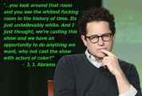

A voice for reason, wisdom and truth. You killed my culture, prepare to die.


It’s what every Star Wars fan has been waiting for since The Phantom Menace. Finally, we get a fresh, new tale of the Star Wars saga with no Jar Jar. Fans almost lost their mind when Disney bought LucasFilm. To top it off, fans were delighted to hear that Star Trek director J.J Abrams was to take command of the new film. Say what you will about the new Star Trek movies, but they did spur new interest in the series and offered significant entertainment value.
This was a new hope for fans, having an entertainment superpower get behind one of the most beloved film series of all time. But then something happened.

Now we find ourselves on the brink of the release. So what’s all the drama been about? From the first ever trailer we were given a glimpse of the main characters in the film. While most were new introductions, we did see some old favorites make the cut.
Most of the controversy stemmed from the casting of a black actor to play the main role for the new flagship series. Contrary to many who might be already deeming this article as racist™, it goes much deeper than race. We’re talking about a deeper agenda. Out of all the millions of potential qualified lead actors, Boyega was chosen for the lead role? And a woman for the second lead? What were these two chosen for, if not based on their acting merits alone?
Here’s where I think most of the scrutiny for the casting comes from: they didn’t have to cast a black actor as a main role. The storyline didn’t depend on it. It’s not as if it was Lando Carlissian’s son. As a side note, Lando is one of my favorite characters in the last two films. However, he was granted the role because of this suave demeanor and ability to deliver comically smooth one-liners—not because the director had a diversity-first SJW agenda that we’ve seen recently in film and other media.
With easily 95% of the Star Wars fan base being white male, it’s hard to believe it was done to market to it’s core demographic. However, leave it to Disney and SJWs to try reaching new gender and racial markets. As we’ve seen with other mediums where this occurrence is happening, these are only traditional white male creations. What agenda is replacing old heroes for kids of a particular demographic?
We saw a similar scenario with Gamergate. One of the calls of the SJW left was that there were not enough women in lead character roles. Why should there be? The absolute majority of the creators and consumers are not women. Thankfully, these men understood the ridiculousness of the requests and stood their ground. You can never appease those with an irrational agenda.
What would be the response if game creators gave in to pressure and instead created an all black female cast for the upcoming Halo 5? Makes zero sense, right? However, to certain people with agendas, hijacking a traditional male media like this would be major win for them.
Say whatever you want, but if you’re honest with yourself you know people of certain groups like having characters who are like them or that they can relate to. It’s why there’s a whole section on Netflix dedicated to a strong female lead™. It’s why BET exists, or the show Girls wasn’t cancelled immediately. For a director to forgo using a character that relates to 95% of his audience demographic is a little strange. Not only that, there are no protagonists who match the core demographic.
While yes, it’s certainly OK for people to take a media of one culture and modify it for another (e.g. Bollywood or China remaking American movies with their own actors), it’s a totally different thing to take an original media and remake it disregarding ANY features of that core group.
How would this move look on other movies? What if a white actor was cast to play the new Will in The Fresh Prince? Twitter would explode. Perhaps a Korean man and a cholo gangster should be made head leads in the next Sex and the City movie because, Diversity. See how when we compare this to other racial and gender-based shows it gets ridiculous?
People are talking because this is becoming more common, like the new Annie, Fantastic Four, and possibly the new Bond. There are even more examples of women leads being shoehorned into traditional male media such as Mad Max and Ghostbusters. Not only do we see the replacement of traditional characters, but also political agendas behind them, such as the new Marvel comic where Captain America is black and battles conservatives on immigration.
Is it diversity for the sake of diversity or something more sinister? From the mouth of Boyega we should just “get used to it.”
People will be quick to point this view as racist™ or sexist™, yet will go insane if it happened to one of their own beloved entertainment mediums. This isn’t about WHO was cast. It’s about the principal behind it. The problem is when people say we need diversity™ in an area, they just mean there are too many whites males involved. However, no one is calling for diversity™ in other ethnically and gender consistent areas.
The real irony here is that deliberately changing the demographics of a movie, medium, or group in the name of just removing the percentage of a certain race is, in fact, actually racist. In the words of Abrams himself:

Read More: The New Ghostbusters Movie Will Be Ruined By The Feminist Agenda